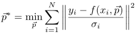

$$qf_commondoc_header.start$$ $$qf_commondoc_header.end$$
QuickFit $$version$$ Plugins
As mentioned in the introduction, QuickFit may be extended by plugins. All available plugins may be found in the directory <PluginsDir>/ (usually the subdirectory plugins of the QuickFit installation directory). The plugins are loaded when QuickFit is started. To check whether a plugin is available, have a look at Help | About Plugins in the main window. The plugin interface of QuickFit is very versatile. Basically there are three parts:
- project items: These plugins implement raw data records and evaluations that may appear as part of the project. Each plugin implements a logical object that represents the raw data/evaluation settings and a graphical user interface (GUI) to display the raw data/evaluation. The GUI for an evaluation will also provide means to start the evaluation for a selection of raw data records. Some basic tools are already implemented in QuickFit and therefore are equal in all raw data records or evaluations. These basic features are a managment for results created from raw data records, which allows to store the result associated to the record and a special evaluation in the project. Also a GUI element to access these results from an evaluation or a raw data record window is implemented. Raw data records may have a set of properties (numbers, text, ...) that may be used to represent some metadata. THe evaluations have access to these properties. Also bothe raw data records and evaluations have some common descriptions stored in the project, that allow to take notes of what one is doing, or to comment on the data.
- fit algorithms and functions: As QuickFit is designed as a data evaluation program, one of the common tasks is least-squares fitting: The plugins in this group implement fit algorthms and fit functions f(x, p) that may be reused by different evaluations to fit a parameter vector p to a set of data points (xi, yi). This also allows to easily add new algorithms/functions without having to change the whole evaluation procedure.
- extensions: These plugins may extend QuickFit in a very free way. They may add items to the menu and toolbar of the mainwindow to execute some function. Also they mey access the current project, but they do NOT implement a part of the project. You may e.g. use them to implement experiment control that may store the recorded data directly into a QuickFit project, or some function that does not fit in any of the above categories.
Here is a list of all currently installed plugins:
List of all available Plugins